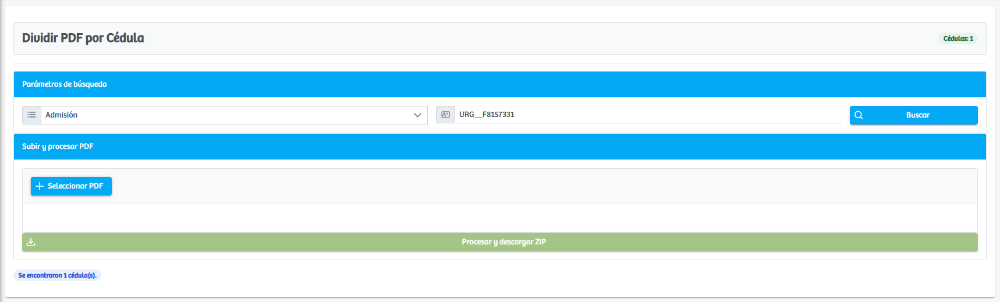
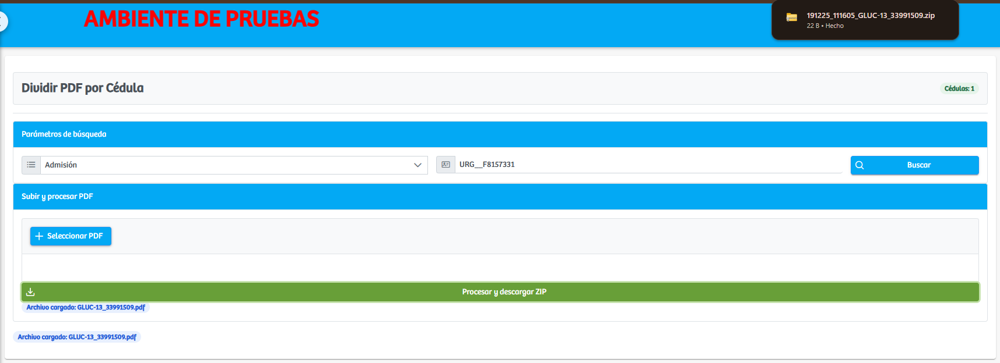

Modulos Sas-Web
Funcionalidades
Dividir PDF
El módulo Dividir PDF permite procesar documentos PDF que contienen múltiples registros asociados a diferentes pacientes, dividiéndolos automáticamente según la cédula correspondiente. Su estructura está diseñada para guiar al usuario paso a paso, desde la búsqueda del registro hasta la carga y procesamiento del archivo.
Al ingresar al módulo, se presenta un cuadro de parámetros de búsqueda, en el cual el usuario debe seleccionar si trabajará sobre una Admisión o una Factura. Una vez elegida la opción, se habilita el campo de texto donde debe ingresarse el número de admisión o factura que se desea consultar. Al hacer clic en Buscar, el sistema valida la información y muestra la cantidad de cédulas encontradas asociadas a ese registro.
Cuando la búsqueda es exitosa, se habilita la sección Subir y procesar PDF, donde se muestra el botón Seleccionar PDF. Al oprimirlo, se abre el explorador de archivos del equipo para que el usuario pueda elegir el documento PDF que desea dividir. Una vez cargado el archivo, este se muestra en pantalla como un archivo listo para procesar.
Con el archivo cargado, se activa el botón Procesar y descargar ZIP, que ejecuta la división del documento. El sistema extrae cada parte del PDF correspondiente a una cédula identificada en la búsqueda inicial y genera un archivo comprimido (.zip) que contiene todos los fragmentos del documento ya separados. El nombre del archivo descargado incluye automáticamente una parte del nombre del PDF original, facilitando su identificación.
Este módulo optimiza el manejo documental al automatizar un proceso que antes debía hacerse manualmente, garantizando precisión y reduciendo tiempos en la gestión de soportes clínicos o administrativos.